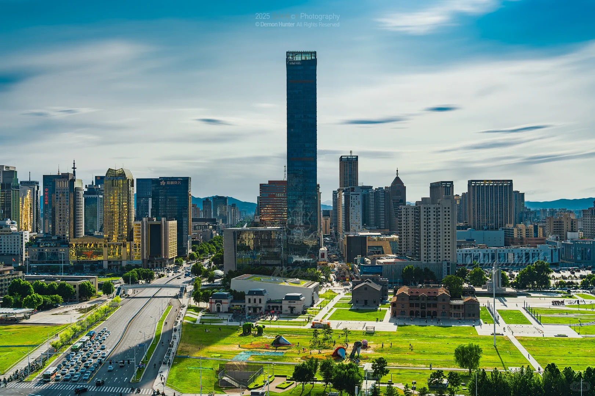
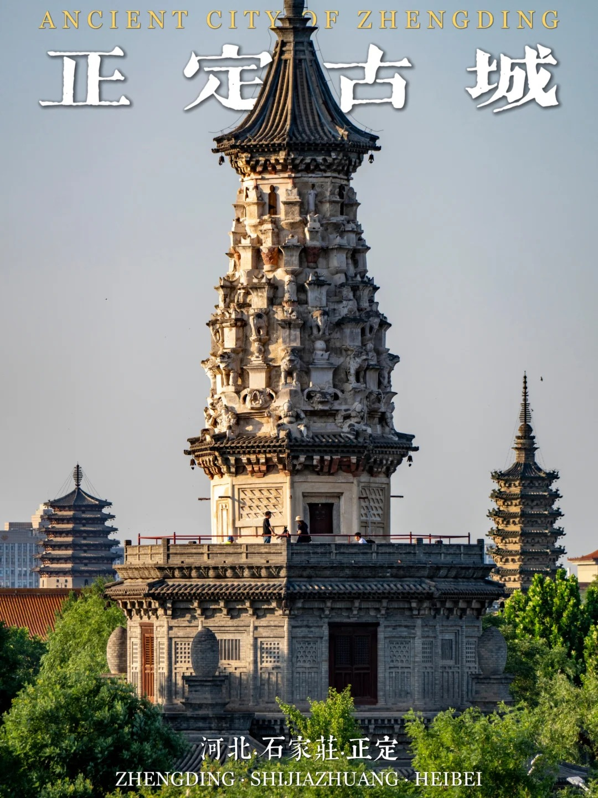
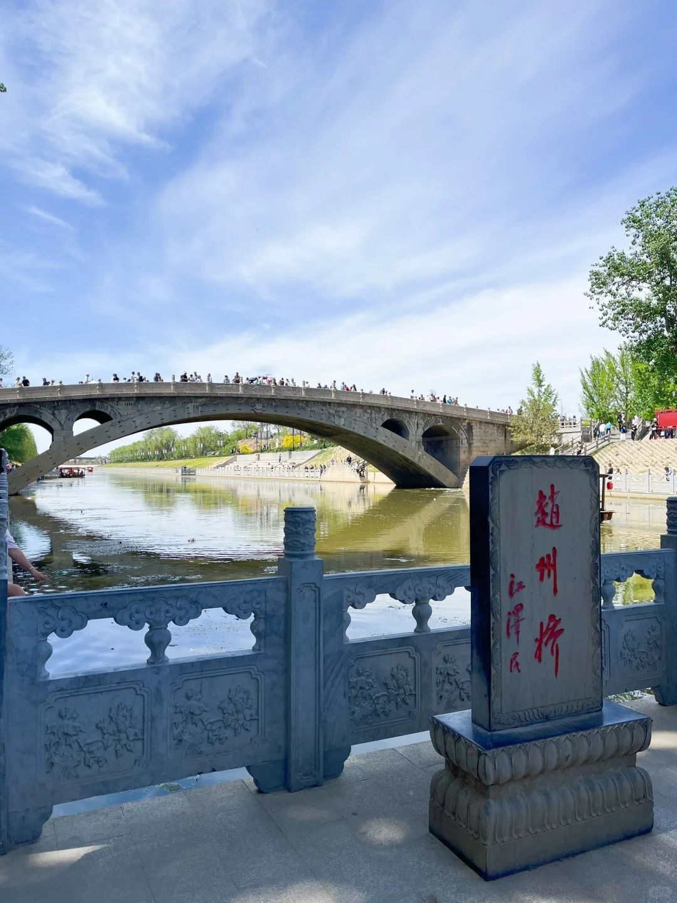
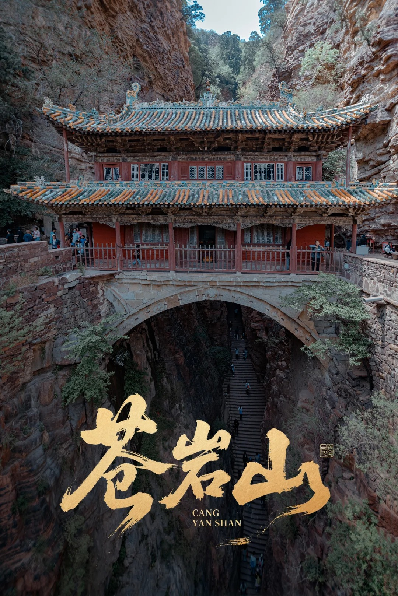
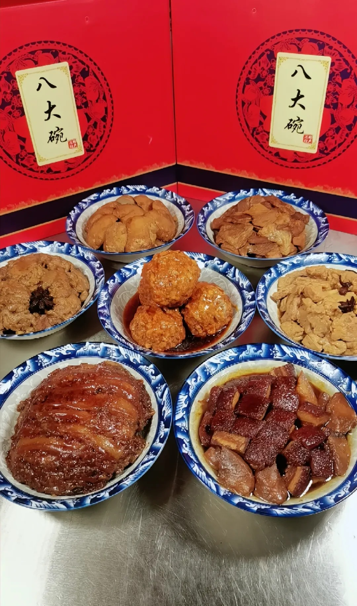

A Journey Through Time and Modernity in the Heart of Northern China.
Learn MoreWhere History Meets Progress
Shijiazhuang, the capital city of Hebei Province, is a major transportation hub and industrial center in Northern China. Often called the "Medicine City" for its leading pharmaceutical industry, it serves as a gateway to the rich history of the North China Plain.
From the ancient military strongholds to the birth of the "New China" in Xibaipo, Shijiazhuang offers a unique tapestry of cultural heritage and rapid urban development.

Timeless Wonders of Shijiazhuang

A historical treasure house home to the Longxing Temple, featuring magnificent Buddhist architecture and statues from the Sui and Tang dynasties.

Also known as Anji Bridge, it is the world's oldest open-spandrel stone segmental arch bridge, built during the Sui Dynasty over 1,400 years ago.

Famous for its "Bridge-Building Hall" suspended between two cliffs, this scenic spot was a filming location for the movie 'Crouching Tiger, Hidden Dragon'.
Authentic Flavors of the North
A traditional banquet consisting of eight distinct meat dishes, symbolizing hospitality and abundance. It has been a staple of Shijiazhuang's culinary identity for centuries.
Don't forget to try the local specialty Pears and the unique savory snacks that define the local street food culture.
